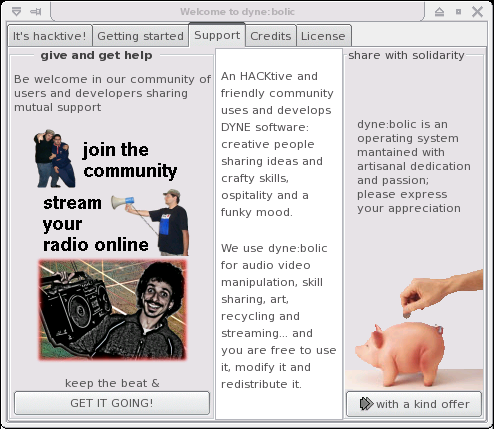
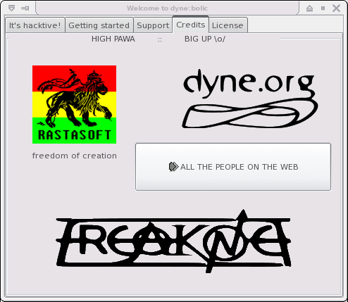
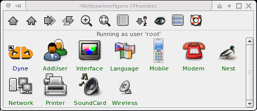
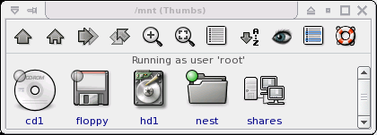
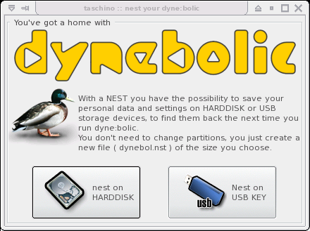
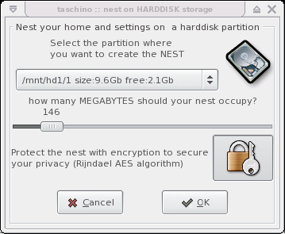
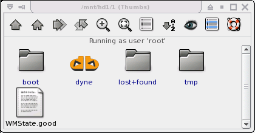
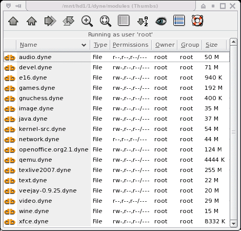

Copyright © 2003, 2004, 2005, 2006, 2007, 2008 Denis Roio
dyne:bolic GNU/Linux is a live bootable distribution working directly from the CD without the need to install or change anything on harddisk. It can recognize most of your hardware devices and offers a vast range of softwares for sound and video production, streaming, 3d modeling, peer to peer and filesharing, deejaying, veejaying and more.
This operating system focuses on providing multimedia functionalities to surf, stream, record, edit, encode and broadcast both sound and video; it also overcomes usual installation problems by providing an easy way to run from harddisk without repartitioning, but just copying a directory (docking), thus avoiding any risk of data loss and preserving the integrity of other systems you are already using.
dyne:bolic it is made by and shaped on the needs of media activists, artists and creatives to stimulate the production and not only the fruition of digital and analog informations. Empowered by GNU/Linux and the groovy open source software community, this operating system takes birth as a grassroot effort to spread free software and the spirit of sharing informations.

The latest version of this document is made available online at the address dynebolic.org/manual and in printable format at dynebolic.org/dynebolic-manual.pdf. For more informations visit the homepage on dynebolic.org where more online documentation is made available. To contribute you can report bugs and get in touch with the community of users and developers joining the the discussion mailinglists or the irc.freenode.net #dyne chat channel.
Far from being complete in exploring the possibilities of each single software, you'll get introduced and find basic directions on how to use, modify and employ dynebolic in various circumstances.
When in need of in-deep information on how to operate a particular software, you should consult the included man pages.
The manpage is the name of the manual page describing usage of the program, you can use it with the man command from an XTerminal inside dyne:bolic :
[d:b] ~ # man hasciicam [Enter]it will show an higly informative text about the usage of the program; the manpage name usually matches the name of the program executable itself.
Always keep in mind: the man command is your friend :) it works in every GNU/Linux system providing information about every command, and with all the commands that are around there is a lot to discover! for example have a look at manuals like "sox" or "convert", you'll find out that you can do a lot of things just from the XTerminal commandline!
At last, in case you are using intensively a certain software for your purposes, don't miss to consult its own documentation and join the community of users around it: there you can discover more about its usage and development.

Jah Rastafari Livity bless our Freedom! This is free software, share it for the good of yourself and your people, respect others and let them express, be free and let others be free. Live long and prosper in Peace!
But, no Peace without Justice. This software is about Resistance inna babylon world which tries to control more and more the way we communicate and we share informations and knowledge. This software is for all those who cannot afford to have the latest expensive hardware to speak out their words of consciousness and good will. This software has a full range of applications for production and not only fruition of information, it's a full multimedia studio, you don't need to buy anything to express your voice. Freedom and sharing of knowledge are solid principles for evolution and that's where this software comes from.
Inna babylon, money is the main requirement to make a voice possible to be heard by others. Capitalist and fundamentalist governments all around the world rule with huge TV monopolies spreading their propaganda, silencing all criticism.
This is a struggle for Redemption from existing operating systems which always require new expensive hardware for doing the same as ever: give us free players but make us pay for producing our own voices. And the one who protects you rips you off, as the Arabs say.
Dyne:bolic is a tool to produce and publish yourself, freely. There is nothing to consume here, there is all you need to create.
Commercial operating systems always give a possibility to listen - all kinds of "free to download" players, but always with restrictions and no easy way for everybody to speak out. The way communication is structured follows the hierarchy of powers allready established in babylon's mediascapes and, worst than ever, money is the main requirement to spread a voice and let it be heard by others.
Neverthless, proprietary software spreads the dependence from business companies thru the populace: whenever we share our knowledge on how to use a certain software, we make the people in need to buy the tools from merchants in order to express their creativity. This is great responsability for anyone of us who teaches somebody how to do something with software: the need to buy will be slavery under the merchantile interests of capitalism.
The roots of Rasta culture can be found in Resistance to slavery. This software is not a business. This software is free as of speech and is one step in the struggle for Redemption and Freedom. This software is dedicated to the memory of Patrice Lumumba, Marcus Garvey, Marthin Luther King, Steve Biko, Walter Rodney, Malcom X; in solidarity with Mumia Abu Jamal and all those who still resist to slavery, racism and oppression, who still fight imperialism and seek an alternative to the hegemony of capitalism in our World.
Hic Sunt Leones. And Much Blessings in Jah Luv to All Those who still Resist. Selah.
Streamtime is a project of Radio Reedflute in collaboration with Rastasoft, developed with artists and activists from Iraq and elsewhere. Streamtime is a loose network of media activists dedicated to assist autonomous networking. Streamtime uses old and new media for the production of content and networks in the fields of media, arts, culture and activism in crisis areas, like Iraq.
We imagine improvised expressive devices like a CD that turns your PC into an on line streaming studio. Imagine a mob that creates a traffic jam. Think of the religious policeman in London, the konfused kollege kid and the jealous dentist in Baghdad and the jailed blogger blogging on in Cairo. Building autonomous networks in extreme conditions.
Streamtime uses old and new media for the production of content and networks in the fields of media, arts, culture and activism in crisis areas, like Iraq. Streamtime offers a diffuse environment for developing do-it-yourself media. We focus on a cultural sense of finding your own way in the quagmire that is Iraq, and its representation in the global media. We should not try to change politics in order to foster cultural change; we should support cultural manifestation in order to force political change.
Streamtime may take the form of a campaign, a work of collaborative art, a current of unheard sounds, unspeakable words and unseen imaginations.
Remote interaction and ubiquitous dialogues, dematerialized communication and participation on the streets. Space in its territorial, acoustic and cybernetic dimensions is fragmented and recomposed realtime. Hacking codes both moral and digital, forming new maps, mutant drawings and unstable skins. Information overload can be abandoned in favor of consciousness and collaborative practices. Memory has a digital, diverse, horizontal voice.
The distinction between what is public and what is private is becoming more and more blurred with the increasing intrusiveness of the media and advances in electronic technology. While this distinction is always the outcome of continuous cultural negotiation, it continues to be critical, for where nothing is private, democracy becomes impossible [1]
The internet offers plenty of free services, on the wave of the Web2.0 fuzz and the community boom, while all private informations are hosted on servers owned by global corporations and monopolies.
We urge you to reflect on the importance of keeping privacy for personal data. Our present world is full of prevarication and political imprisonments, war rages in several places and media is mainly used for propaganda by the powers in charge. Some of us face the dangers of being tracked by oppressors opposing our self definition, independent thinking and resistance to omologation.
People have the right to protect their privacy as much as their freedom to express.
It is important to keep in mind that noone else than *you* can ensure the privacy of your personal data. Server hosted services and web integrated technologies gather all data into huge information pools that are made available to established economical and cultural regimes.
Since version 2.4 in this free operating system was introduced support for strong encryption of your /home private data with Linux dm-crypt i586 optimized Rijndael hashed SHA256, to provide an efficient and user-friendly tool to protect your bookmarks, addressbook, documents and emails by carrying them back with you, protected with a fairly strong cryptographic algorithm.
A passkey to read your data is stored inside a file, which is also protected by a password. It is possible to keep everything with you on a small usb stick, still being sure that the data won't be easily recovered in case you loose it. You can also give the passkey protecting your data to a friend, to make the data unaccessible until you meet again, which can be useful in case of tricky transports. You'll find more informations in the following sections about nesting and privacy.
The dyne user's manual is copyright (c) 2003 - 2008 Denis Jaromil Rojo
Thanks for reviewing and inspirations go to the Streamtime crew, all the bloggers from Baghdad and any other crazy place in the world where people like us happens to be living, has to live it, and can even find a way to survive.
Permission is granted to copy, distribute and/or modify this document under the terms of the GNU Free Documentation License, Version 1.2 or any later version published by the Free Software Foundation; with the Introductory and Colophon sections being invariant, with the Front-Cover and Back-Cover Texts clearly stating authorship and copyright notices. You should have received a copy of the GNU Free Documentation License along with this manual; if not, write to the Free Software Foundation, Inc., 59 Temple Place, Suite 330, Boston, MA 02111-1307 USA
dyne:bolic GNU/Linux is copyright (C) 2001 - 2008 Denis Jaromil Rojo
Dyne:bolic is free software; you can redistribute it and/or modify it under the terms of the GNU General Public License as published by the Free Software Foundation; either version 2 of the License, or (at your option) any later version. This program is distributed in the hope that it will be useful, but WITHOUT ANY WARRANTY; without even the implied warranty of MERCHANTABILITY or FITNESS FOR A PARTICULAR PURPOSE. See the GNU General Public License for more details. You should have received a copy of the GNU General Public License along with this program; if not, write to the Free Software Foundation, Inc., 59 Temple Place, Suite 330, Boston, MA 02111-1307 USA
Dyne:bolic doesn't requires to install anything on your harddisks, which can be left untouched while the system is used. Still, depending from your preferred way to operate, it can boot from harddisk, CD, USB or network (explained the following chapter) and it can store data in a single file that can be transported across different media. The whole operating system fits on a single CD, to run it from harddisk you just need to copy the DYNE directory in it (see docking), while in a diskless thin-client setup that can also be mounted via network. This makes dyne:bolic very easy to be employed and mantained, while there is no risk for misconfiguration: the system comes as it is, providing a slick desktop full of applications ready to use.
The default desktop manager is Xfce, it offers you multiple desktops (try ctrl+F2 and other numbers) and a menu that you can recall by clicking the right mouse button on the background. On the upper right corner you have your storage devices which you can access with a click.
Inside the application menu software is organized by tasks, so you can easily find your way to play, record, edit and stream both audio and video, communicate and publish text, webpages, 3d animations and much more.
Click on CONFIGURE in your menu to access system configuration facilities and customize your system.

To be introduced to various desktop functionalities you can visit Spot's homepage and read the OSNews dyne:bolic review.

You can easily access your files on connected storage devices (harddisks, cd, floppy, usb) using the buttons in the upper right corner of your desktop, as well your local network shares and remote internet accounts. Your partitions are automatically mounted in the /mnt directory, which you see linked in your home as Volumes. You can read and write on all your volumes except for NT filesystems, which you can only read.
Usb storage devices (like usb pens, smartcards and some digital photo cameras) can be opened simply with a double click on the usb symbol. But beware that sometimes unusual partition schemes can confuse the autodetection, so you can try by hand in a Xterminal issuing manual commands:
[d:b] ~ # mount /dev/sdXY /mnt/usb [Enter]Where you must substitute X with letters (a,b,c...) and Y with numbers (1,2,3) for example /dev/sda2.
If you have only one cdrom or dvd player on your computer with docking you can have it free for use after booting dyne:bolic (see following chapter about DOCKING), then you can access, browse, play and rip compact discs and dvd.
To have a general overview about the organization of various directories you find in GNU/Linux systems, read the manual hier (type "man hier" in the Xterminal).

By default your /home, /etc and /var directories reside in RAM memory: every file and configuration you save will not be there again at the next boot. To save your home and settings permanently you need to create a NEST: it is just a file called "dyne.nst" that can be placed on a harddisk or usb storage device and it loaded at every boot. You just need to create your nest once, dyne:bolic looks for it at every startup and if it is present starts using it automatically.
The nesting function is very practical to keep all the modifications you make to the system while using it (settings, saved files, accounts, language, private data etc.) and transport or backup them. For example, in case you nest on your USB stick, you can boot with it connected at startup, then that nest will be used and all your /home and settings will always stay with you, in your personal USB stick. This way you don't even need a laptop to travel around with your software environment and data, just carry a dyne:bolic CD and your nested USB stick with you, wherever you'll be able to boot it you'll have your /home.
How to create a nest? at the boot screen or in your Home, click on the Configure button, then choose Nest (the little icon of a duck). You will be prompted to create a nest on your harddisk or USB stick, proceed choosing the partition you want and how big you need it: good sizes may vary between 250 and 500 megabytes, depending from how much you plan to use the system, modify it and open it for other users.

Since version 2.4 when creating a nest you'll also see a padlock button: press it and your new nest will be secured with encryption, you'll be asked to set a password, which will be then asked at every boot when you mount the nest. Without that password it will be very hard to access your nest, so you'll be granted with fairly good security for your personal data.
If you nest on harddisk, the supported partition formats are: Dos, Fat32, Ext2, ReiserFS, Beos (BeFS), and NTFS (supported since version 2.5). The nest is just one file created in the /dyne directory at the root of your partition (C:\ or D:\ in the DOS filesystem) called dyne.nst. To erase a nest simply delete that file.
Since version 2.5 it is also possible to mount nests after boot: just plug in your usb stick and navigate the content of the dyne/ directory, a double click on the dyne.nst (the duck icon) will mount your home and prompt for a password if it is encrypted.

Dyne:bolic solves the problem of istallation in a very simple way: there is no installation :) you simply copy a directory and this is called "docking".
Docking lets you run the system from an harddisk, with shorter load time and more speed. With a dock you can also boot from floppy, or from a multi-boot partition.
Docking consists of copying the dyne/ directory from the CD to the harddisk. You don't need to change anything in your partition, just copy a directory into it: drag the dyne/ folder from the CD on the icon of your harddisk, that's it! It will occupy less than 700 megabytes of space. After 'docking', you can boot with the CD inside and it will eject automatically after the first phase of the boot process, this is the sign the dock went well! Like that, even without the need for repartitioning or configuring a double boot, you can just switch to dyne:bolic using a CD or a floppy, but still run it from harddisk at full speed, like an installed operating system - and even better! ;)
Of course when you want to remove the dock is easy: just delete the /dyne directory in your harddisk!
Remember that docking is different from nesting: Docking is done to run the system and all application from harddisk instead of CD, nesting is to store your home and settings in a single file on harddisk or usb storage.
More online information about docking is available on the wiki community pages.
Dyne:II offers the possibility to be expanded using .dyne modules: collections of applications that can be easily installed and used. In fact the basic system already contains some of these modules, that can be found in your dock as the dyne/modules/ directory. From the menu, you can see them clicking thru CONFIGURE -> DYNE -> MODULES

Additional dyne modules are available online on the dynebolic.org homepage in the Extras section. Download and activate them just dropping the .dyne files into the dyne/modules docked directory. Then reboot, that's it!
Users can easily keep their modules across different machines, always finding back the software they need. Modules can also be used thru different dyne versions: just update the core dock and then drop in your good old modules.
Download free and open source dyne modules online from ftp://ftp.dyne.org/dynebolic/modules, there are many interesting extensions already: office and development tools, crosscompile chains, manuals and of course games :)
Quite some developers and artists are actively contributing with modules listed on http://lab.dyne.org/DyneModules.
When you install new modules, since it is so easy, the only care that must be taken is their provenience, since a broken or malicious module can access all your system. Of course to install a module you must be root. On our website we'll suggest only modules we have tested, anyway you're free to choose, it's all up to you to decide whom you trust, you just did it by running this system on your computer didn't you? :)
This chapter will describe various advanced uses of the dyne:bolic system: how to cluster multiple computers to take advantage of shared resources, how to make the system resident on various computers in a medialab and how to keep your data safe from intrusions into your privacy.
The knowledge provided by this chapter requires some basic confidence with GNU/Linux systems and the use of the text console terminal. It will empower you with the ability to flexibly setup fully operational medialabs even using found computers, but you need to plan well the architecture of your resources depending from your specific situation.
With docking we saw that simply moving a directory in the root of a partition can let us boot from CD and run from harddisk. This is a very simple and safe way to have a dual-boot system: Cd in for dyne:bolic, CD out for anything else. Still some people really likes to get rid of the CD, so here it is explained how.
Keep in mind that the following operation is not necessary to run dyne:bolic from harddisk. If you are not familiar with boot sectors and partition geometry you might need the intervention of an expert when anything goes wrong. Furthermore, in case of a mistake you might delete all the data stored on your harddisks and/or be left without the possibility to boot back into your old operating system.
In order to boot from harddisk you need a bootloader (Lilo or Grub) installed. We recommend the use of Grub for its simplicity and flexibility: in fact that is the default bootloader dyne:bolic will install for you, but in case you have Lilo already installed and you don't want to change it, then there is also a way to add a dyne:bolic entry to it.
The following instructions will cover various situations: you can omit some operations in case your computer is already setted up with them.
In case you are installing a computer from scratch, without anything installed on it yet, then you need to partition the harddisk and format it. You can do so using the command cfdisk to create or modify your harddisk partitions, then mke3fs to format the partitions (or other mk* commands in case you desire to use a different filesystem than Ext3). Beware that this operation above will erase all the data on the disk.
Once you have a disc partitioned and formatted you need to install the bootloader. To do this use the command grubconfig and follow the steps you are prompted, at the end of the process you will be able to boot your computer directly into dyne:bolic, without the need to use a CD.
To re-configure your bootloader (not necessary if you installed one from scratch using dyne:bolic) go look into your harddisk partitions, in case you have a directory boot/ see if inside there is another directory called grub/, if yes there you found your grub configuration, a simple text file called grub.conf or menu.lst which you have to edit by hand, adding a few lines at the bottom in order to add dyne:bolic among the boot menu selection:
title dyne:bolic RASTASOFT Afro Linux root (hd0,0) # ADJUST THIS! kernel /dyne/2618ck1d.krn root=/dev/ram0 rw load_ramdisk=1 max_loop=64 vga=791 initrd /dyne/initrd.gzAfter doing that you'll need to set the harddisk where you have docked: where it says "ADJUST THiS" change the (hd0,0) if necessary: hd0,1 for hda2 - hd0,2 for hda3 - hd1,0 for hdb1 and so on... trying wrong values is not dangerous and in case you are confused there is a lot more documentation about this process in the grub manual pages.
In case you have installed lilo, search among your harddisk partitions for the directory etc/ and then inside for the lilo.conf file, if found then add the following lines at the end of it:
image = /dyne/2618ck1d.krn root = /dev/ram0 append = "max_loop=64" initrd = /dyne/initrd.gz label = dyne read-write vga = 791Being sure that the /dyne directory is inside the partition you boot, which in lilo is configured by the boot = /dev/hd* usually at the beginning of the lilo.conf file. Please note the "image =" parameter takes a full path to the kernel file, which is named after it's version in a condensed form, for instance here 2618ck1d stands for 2.6.18-ck1-dyne . The condensed format is necessary for a 8.3 filename restriction of the isolinux CD boot system.
Happy hacking ;)
Network booting is supported on some personal computers: the PXE system was included on some BIOS already at the beginning of year 2000 (rough estimation): if no harddisks or cd devices are found to boot, the first black screen of the computer will search for a PXE boot on the local network.
When booting PXE looks for a DHCP server on the local network for an address assigned. When found it will connect via TFTP to receive the kernel and the ramdisk from that server or another one.
To start a TFTP server distributing the current docked dyne:bolic system, it is enough to run this command in a terminal:
[d:b] ~ # tftpd -l -s $DYNE_SYS_MNT [Enter]You can also configure a DHCP server to provide the network addresses to any PXE client booting. To do that use the graphical program gdhcpd starting it from a terminal, or the sample configuration file in /etc/dhcpd.conf. See man dhcpd for a reference to how to launch and operate the DHCP daemon.
For more informations see man tftpd and man dhcpd.
The following instructions explain how to make a usb storage device (like usb stick) bootable with grub and install dyne:bolic on it so that you can run it from USB, without harddisk or CD.
If you are looking for instructions on how to save your personal data on a USB stick, then this is not the right place: look at Nesting. If you're looking to copy the entire system over to your harddrive, again, this is not the right place, look at Docking. This section documents on how to put the whole system on the usb stick.
The whole system requires a USB device about the size of the /dyne directory (currently ~655MB at version 2.4.2) + ~30MB (for file system headers). Therefore, the entire system should fit on a USB stick of ~685MB, but you may want a bit more space for your personal files. If your USB stick is smaller try Nesting instead.
How DyneII loads (technical):
| the boot system consists of a bootloader, in our case grub |
| the bootloader loads a kernel, in our case linux :) |
| the kernel loads a ramdisk, in our case dyne:II initrd.gz |
| the ramdisk will look for a dyne/ dock |
| we keep both kernel and ramdisk in a dock and install grub |
[d:b] ~ # cat /proc/partitions [Enter]Ignore the entries that end in numbers, those are individual partitions on each separate device. The ones that end in letters are different devices: hda means your primary IDE harddrive, sda (or sdb sdc etc.) generally means a USB device (but can also mean a SCSI or SATA harddisk, be sure to verify this on your specific system configuration)
If you're confused, look at the blocks column, which shows the # of 1KB blocks on the device. If you know how big your USB stick is, you can find it this way. ~1,000,000 blocks = a 1 gigabyte device; ~64,000 blocks = 64MB device. From here on this tutorial assumes your usb device is /dev/sda, if it's not /dev/sda, change it as necessary.
Now let's prepare the partitions of the usb key: in this example we are using the console based cfdisk here, but you can also try to use Parted which is a graphical tool in MENU->FILES->Parted. Be careful that you selected the right device to operate on (eventually different from the /dev/sda in the examples below) because from now on the operations described will erase all data on the device.
Let's start the partition tool:
[d:b] ~ # cfdisk /dev/sda [Enter]Now from inside cfdisk:
| delete all partitions |
| create a new primary at the default maximum size |
| set the type to 83 (Linux) |
| Write everything and then Quit |
[d:b] ~ # mke2fs /dev/sda1 [Enter]You can change the above command mke2fs -j in case you want to use EXT3 instead of EXT2. However, it is probably not advised to use the EXT3 journaled filesystem on a flash/USB device: journaling writes to the disk more often than necessary, which wears out the USB device more quickly. Use a non-journaled filesystem such as EXT2 (Linux only) or FAT32 (if you want to make your usb device readable outside of Linux). The default (ext2) is a safe choice, however, you may want to read up on journaled vs non-journaled file systems and make an informed decision in your case.
Now mount the drive:
[d:b] ~ # mount /dev/sda1 /mnt/usb [Enter]And Install the bootloader (grub):
[d:b] ~ # grubconfig [Enter]Select the correct usb device, generally the last item in the list. Note that if all the items in the list start with hda the computer you're currently using can't be booted from a usb device and you'd be installing grub to a partition of your harddrive instead.
Now copy the dyne/ dock directory from your current system
[d:b] ~ # mkdir /mnt/usb/dyne [Enter] [d:b] ~ # rsync --inplace -Pr $DYNE_SYS_MNT/* /mnt/usb/dyne/ [Enter]Rsync is better than cp and we have a progressbar for this operation, which will take quite some time, depending if you have a USB 1.0 or 2.0 connection.
It should be all ready at this point, so try booting your USB device on a computer which supports USB booting. If it works, great! If not, open your /boot/grub/menu.lst (on the USB device) and change the root(...) line from (hd0,0) to (hd1,0).
Since version 2, dyne:bolic changes its approach to clustering implementing a "human driven" suite of tools that let you control various applications running on multiple computers connected to your network.
In situations where you have many old computers you can use one for each task and control all of them from the same keyboard and mouse. The desktops of the computers can be visualized on your own screen or on multiple screens in case you have monitors attached to each of them. Powerful workstations can be combined using multiple processing units and their displays can be tiled together to compose a unique wide desktop.
This way to operate dyne:bolic computers involves different kinds of applications offering a flexible setup that you can customize to your needs. This part of the manual will just make you familiar with the tools and you'll need to refer to their manuals to discover all the potential.
To connect multiple computers you should first make sure you can reach them over the network and you know their addresses. A simple way to do it that will work on every GNU/Linux system is using the command ifconfig on each computer to print out the currently configured network address:
[d:b] ~ # ifconfig | grep inet [Enter]then edit your /etc/hosts file with the full list of addresses and a name for them that you can choose. Copying the /etc/hosts file on all involved machines will make them aware of each other "hostnames".
Synergy is a powerful tool that lets your keyboard and mouse control different desktops accessed simply moving the mouse out of the current screen into theirs. An example configuration file is provided in /etc/synergy.conf and it must be modified with the hostnames of your computers (to be associated to IP numeric addresses in /etc/hosts).
The main computer where the keyboard and mouse are attached should run the command:
[d:b] ~ # synergys -n hostname -c /etc/synergy.conf [Enter]All the other computers to be connected should run this command, making sure the config file include them in the setup:
[d:b] ~ # synergyc -n hostname -c /etc/synergy.conf [Enter]
VNC is a remote video client that lets you control the desktop of another computer on your network as inside a window on your current desktop. It can be also used to interact with two mouse and keyboard at the same time.
To share the desktop of a computer for an incoming VNC connection just run:
[d:b] ~ # x11vnc [Enter]To connect to a computer sharing the VNC desktop:
[d:b] ~ # vncviewer computer [Enter]For more informations on VNC see man x11vnc and man vncviewer.
Remote X execution lets you run an application on another computer and control it on your desktop, as if it would be running locally.
In order to authorize other computers to open applications on your desktop you must first run the command:
[d:b] ~ # xhost +computer [Enter]Then Click the network button on the top-right panel and run Exec_X11, fill in your user account (default is user:root password:luther) and write the command to start the application.
Dyne:bolic is developed with your privacy in mind: as mentioned before the NEST can be encrypted to make your private data unaccessible unless your password is provided, now we'll proceed to analize in deep all the aspects of this security measure.
When an encrypted nest is created, every file you place in your home directory will be preserved in a scrambled form using a Rijndael/SHA256 algorithm: such a cypher can be considered very secure, maybe some military organizations are able to break it, but anyway that would be very expensive in terms of resources employed.
Dyne:bolic encryption mechanism employes a passfile "dyne.nst.gpg" which contains the cypher used to protect your data: that file holds the password that, matched together with your dyne.nst file, can access all the data you store in your nest. So actually that file is very precious for your privacy, you should be careful and not copy it around.
Since the passfile is so delicate, it is also protected with a password: the one you choose at the beginning, which is used to scramble the passfile through a CAT5 algorithm. Keep in mind that this cypher algorithm is weak and eventually, in case an intruder takes possession of your .gpg passfile, it will be easy to crack.
Now in practical terms all this encryption scheme means that you can safely move around your dyne.nst file separated from the dyne.nst.gpg passfile: there will be no intrusion in the data stored inside even in case you loose it. It also means that you can give your passfile to a friend, still protected by the password you memorized, so that neither you nor your friend will be able to access the nest until you meet up again. More in general, this scheme lets you separate your encrypted data from the passfile, still keeping everything sealed by the password you keep in mind, and move the data around in different places being sure meanwhile it's not accessed by anyone else.
So for sure we can say our privacy protection is way above the usual schemes used in most common operating systems, which keep your data in clear and physically accessible.
In case you are involved in some mission critical task and you are facing the possibility of imprisonment and torture, you should take a bit more care. A good practice would be to customize a bit the startup scripts of dyne:bolic to have a false password prompt, the /lib/dyne/nest.sh script is a good start. Another way can be to have an encrypted nest for which you would disclose the password if forced to, but then also another encrypted file hidden somewhere that is not prompting for a password at every boot.
The GNU/Linux platform nowadays offers an interesting range of tools for video production, editing and manipulation; you can play all kind of video files and DVDs, but also encode them for distribution and switch between formats. Furthermore, you'll find software for recording, veejaying and streaming, non-linear editing and subtitling.
However, you should consider that most of the video tools running on GNU/Linux platform are in development: indeed you can help much in testing and reporting the bugs you encounter, that's how anyone can help free software to grow better and better, as it does.
Now lets proceed on how to configure an available video device and then browse thru the video software included in dyne:bolic, following a subdivision in task categories.
There are various devices that can be used on PC computers in order to have video input: USB webcams and capture cards, PCI TV cards, Firewire and even parallel port. They all have different chipsets and manufacturers and need different Linux device drivers.
Dyne:bolic is capable to automaticly recognize most PCI (internal) TV cards at boot time (WinTV, BTTV) and now also USB webcams as well Firewire controllers: they will all be initialized at boot and can be accessed from the video device /dev/video0 or subsequent numbers (video1, video2 ..) in case you have more than one.
If your video device is not recognized automatically (the /dev/video doesn't exists) then you need to configure it by hand. In case of USB webcams, if your is not recognized automatically a good place to look for hints is the linux-usb website. Also the Spot's guide about rolling your camera is a good place to visit for more informations on how to proceed.
If the online documentation says your device is supported by a particular kernel driver, you can try to load it using the command 'modprobe modulename' and see if everything went well by looking in the last lines of the messages printed out by the dmesg command. Many modules are already present in dyne:bolic, but some might require to be compiled using the kernel sources, which is a more complicated process that can't be explained here: you'll need to find more instructions online about how to do it and download the dyne:II kernel sources using dyneSDK (see the DEVELOPMENT chapter about it).
The VeeJay applications implement a pioneeristical approach to video manipulation in realtime, taking advantage of the high computational power offered by personal computers nowadays. If you're active in the field of media and visual art, dance or scenografy, this software can be interesting and sometimes very useful to your research.
FreeJ is a vision mixer: an instrument for realtime video manipulation used in the fields of dance teather, veejaying, medical visualisation and TV.
FreeJ lets you interact with multiple layers of video, filtered by effect chains and then mixed together. Controllers can be scripted for keyboard, midi and joysticks, to manipulate images, movies, live cameras, particle generators, text scrollers, flash animations and more. All the resulting video mix can be shown on multiple and remote screens, encoded into a movie and streamed live to the internet.
FreeJ can be controlled locally or remotely, also from multiple places at the same time, using its slick console interface; can be automated via javascript and operated via MIDI and Joystick. Especially the javascript interpreted makes it an easy to learn language to make your first step in the wornderful world of programming.
More documentation on freej can be found in /opt/video/share/freej especially the scripting reference. A user friendly tutorial can be found online, and more information at its homepage on freej.dyne.org.
Other tools included in dyne:bolic are useful to be employed in different ways on realtime video: EffecTV can apply realtime effects to images, one by one, realizing "distortion mirrors" and other possible funny uses; Xaos can let you explore the psychedelical word of chaos mathematics and fractals :)
A remarkable piece of software is Pure Data which together with various extensions realizes a tool to connect various processing units in a visual scripting fashion, to create visionary audio machines and interactive video tools. Pure Data, also called PD, is as powerful as complicated to learn; it helps the fact that is getting now adopted by various media-art schools around the world as a free and open source for students to realize their projects. From the wide community of digital artists and creatives using it in all kinds of interactive installations and performances, the Goto10 crew joined the development of dyne:II to implement the pure.dyne software module which provides you everything you need to start using Pure Data right out of the box, without installation problems: check their website at http://puredyne.goto10.org to download a copy and add it to your dyne:bolic system.
Players are provided to playback various video formats as AVI, MPEG, DIVX and WMV files, signals from TV cards or Quicktime, RTSP and HTTP live streams from the net. At the time being, dyne:bolic is compatible with most of the video formats around: thanks to MPlayer, Xine and FFMpeg free software you have chances to view files otherwise unsupported by other proprietary systems. Xine is recommended for watching DVDs, while Xawtv is a fully featured television viewer. Mplayer will be used to playback videofiles whenever you'll doubleclick one in the file manager (to close mplayer then you have to press 'q').
Video recording is supported using a vast number of devices: from TV/video card and DVD using MEncoder, a commandline tool to be used from an XTerminal, a bit complicated but very powerful, see it's manual. An user-friendly interface for DV acquisition via firewire is provided by Kino; while XawTV supports all other types of video devices and can be good to check if your is recognized as it has the widest support for hardware.
Inside dyne:bolic you'll find Cinelerra, which implements a common approach to non-linear editing, with a nice user interface, speed and responsiveness.
You can be introduced to Cinelerra by the manual available on manual.cinelerra.org or this online tutorial.
Also AviDeMux is a useful tool for quickly cutting video, supports even more input formats than Cinelerra and can be used to convert between some formats and do simple editing tasks.
Consider that video editing tasks are the most demanding, so you'll need a relatively fast computer (from 2004-2005) in order to achieve decent interactivity and satisfactory results.
For converting between video formats its included the powerful Transcode tool, which is a commandline application that can be scripted to convert large number of files or easily accessed via a graphical interface.
Streaming video can be easily setted up in three different ways: using Mpeg4IP, FreeJ or HasciiCam.
With Mpeg4IP you'll stream in Mpeg4 format and you'll need an online server running Darwin broadcast software, the resulting stream can be watched with most video players available today on various platform. This method provides good quality and smooth framerate, can record while streaming, efficiently uses bandwidth when running on multicast and can stream audio synced with the video. It's drawbacks are that it can be hard to find or setup a broadcast server, slower machines can't stream neither play it (cpu intensive).
With FreeJ you can combine different video sources, apply effects and overlay text, put transparent images and even more, then all the resulting stream can be live encoded with the free Theora codec and sent to an Icecast2 server online, this way anyone will be able to take your stream from the internet and play it back for example using the VideoLan player available for all computer platforms. The capability of mixing and effecting the video realtime is a unique feature of FreeJ, but the drawback can be the initial difficulty you can encounter in mastering the program, which has to be started with particular flags from an XTerminal in order to activate the streaming functionality. To find out more about it see the previous section about VeeJaying and check the Streaming with FreeJ documentation online. In dyne:bolic you will find an example script to stream in /opt/video/share/freej
Hasciicam is Rasta software, the first one Jaromil ever published (2000), distributed by dyne.org. It is capable of rendering a video into text, having letters in place of colors, filling up the image as a greyscale palette. With such an encoding the images look way less detailed, but pretty cool, and the stream uses very low bandwidth: Hasciicam can upload video via ftp to a server and can be viewed directly from any web browser (also text based) - so it can work to provide a video stream even using very old computers, and adds a special bit to it: the ASCII chars. As drawbacks here we have that the video is formed of characters: nifty, but doesn't gives a clear picture, it is just monochrome and can't achieve a smooth framerate on movement. For more informations on how to use see man hasciicam.
This distribution is full with audio software to do all kind of things: electronic music, sound processing, voice effects, interviews and more. And there is one important thing that makes this system superior to any other commercial solution: there is no competition :)
Most of the audio applications in dyne:bolic can be connected together, input to output, in order to form a chain of tools processing the sound: this is done thanks to a technologies like JACK and the Advanced Linux Sound Architecture. Instead of keeping separated the tasks of every single application, now it is possible to take advantage of the great variety of approaches that a GNU/Linux system like dyne:bolic has to offer.
This revolutionary approach will surely pay you back the effort to be introduced to its use, a good starting point is the Spot perspective on technology at http://spot.river-styx.com/viewarticle.php?id=14 and http://spot.river-styx.com/viewarticle.php?id=17.
This operating systems provides players for many audio formats available around out of the box: WAV, MIDI, MP3, OGG / VORBIS, MOD, XM, FLAC, SPEEX and even more can be played out or re-encoded, switching between formats.
The Xmms player is a practical audio player with a minimal and intuitive playlist manager, can play online radio streams and local files and can be skinned or customized with plugins as you like.
Amarok is a fully featured personal jukebox, handling the collection of your audio and downloading automatically printable lables and lyrics of your favourite music. Let it explore your collection of audio so that it will let you search for keywords, memorize your preferences and guess playlists out of your favourite music. It makes it a perfect interface for a jukebox station!
Timidity is a midi synthetizers using GUS patches to render your MIDI files into audio files, as well make you listen to MIDI partitures.
MikMod is a tracker module player (file extensions as MOD, XM, S3M etc.) which can let you listen to demo-scene prods, video game music and what's commony called "chip tunes".
This section includes software to produce live music, interacting in realtime with the applications that generate sound out of microphone, midi, keyboard and mouse inputs. All this software requires Jack to work properly, so that it can be interconnected in a chain of programs, like a virtual rack of different applications.
Hydrogen is a drum-machine where you can load sample kits of instruments and compose a partiture for them to play on a specific rythm. It's homepage offers a collection of many more drum kits you can download, go to http://www.hydrogen-music.org.
Jamin is the Jack audio mastering interface, it can perform professional audio mastering of stereo input streams, equalizing signals with an intuitive and advanced interface to shape all frequencies in realtime.
Jack Rack is a powerful effect rack that can apply chains of audio plugins (LADSPA) on the sound currently being played by other programs. Using Jack you can interface it with all other performance tools and add one of the more than 200 effects available in dyne:bolic.
FreeWheeling is a funky application that lets you record and play multiple samples in realtime, so that they stay looping and can be overlayed one after the other: is a fresh tool to manipulate, sum and and create over recorded sounds, but requires you to read some instructions before start using it, since it's all controlled via keyboard (and, optionally, midi).
This version of dyne:bolic comes with up to date software to record and manipulate audio: it is generally more stable and feature rich than the previous, so you'll hopefully notice the improvements while using it.
Ardour is the fully featured multitrack studio that offers the most advanced interface for your music recording studio. Combined together with other applications when necessary (it also uses Jack) it can really solve all your needs for audio mastering and music production. Check the online documentation for this valuable software on Ardour homepage: if you are a musician, the patience needed to learn it's usage and hotkeys is definitely worth the effort.
Audacity is a user-friendly audio editing program suitable to manipulate your audio files, interviews and recordings, separating or mixing them, applying effects and encoding in various formats. It can also be used to record audio straight away via its intuitive interface, which can be commonly found also on other operating systems since it is a cross-platform free application. A perfect choice to start manipulating audio.
Rezound is a well capable sample editor that lets you manipulate with good precision your music samples, record, loop and apply effects using an intuitive and complete interface, quite responsive also on slower systems.
TimeMachine is a simple yet very useful tool for recording audio, requiring Jack as a sound engine. It is simply a big red button: when you press it it will start recording starting from 10 seconds ago, so that you can record what you find interesting in an audio input just while listening. Whenever you press it records what you just listened, without the need to rewind the tape.
MuSE is another rasta soft by dyne.org included, which lets you stream audio on the internet over various servers (Icecast, Darwin and Shoutcast) in MP3 or OGG format, so that listeners will be able to listen to your voice and music connecting with most available sound players around.
MuSE can mix up to 6 encoded audio bitstreams (from files or network, mp3 or ogg) plus a souncard input signal, the resulting stream can be played locally on the sound card and/or encoded at different bitrates, recorded to harddisk and/or streamed to the net.
A great introduction to streaming and how to operate muse is available online on http://flossmanuals.org/muse, while even more documentation can be found on its website.
The dyne:bolic distribution includes some eccellent programs for image composition and 3d modeling:
Gimp is a well mature application capable to create and edit bitmap images, offers a perfect environment for web graphics as well a powerful script engine to automatize its operations and even generate automatically stylish logos.
Inkscape is a vectorial graphics editor suitable for free hand drawing, cartoons and comics and more generally scalable graphics, realizing an ideal tool for flyers, high resolution prints and quadri-chromic prints
Blender consists of a powerful environment for 3d modeling and game development: it features a well designed interface, a ray tracing engine and scriptability of object behaviours in python: it can produce rendered scenes as well interactive applications and animations on timelines. There is allready a great comunity of artists using it, tutorial and examples are available on its website, as well a detailed manual that can be ordered online. Blender is one of the best tools in the open source and free software world for multimedia productions of many kinds, being adopted in the production of several professional movies. Using the clustering capability of dyne:bolic you can easily build render farms distributing the load on several computers on the same network, see the Spot's tutorial available online on http://.
GQview is an easy to use image browser which you can also use to build slideshows to interactively show your image galleries.
ImageMagick is a set of commandline tools, starting from the convert terminal command (see man convert) you can easily script batch operations over multiple files, applying format conversion and filters on large quantities of images.
Dyne:bolic includes software to let you easily write and compose any kind of text document: hyper-texts that can be published on the internet (HTML), formatted texts that can be printed (RTF, PDF, Postscript and even the deprecated DOC [2] format).
AbiWord is rapidly becoming a state of the art Word Processor, with lots of features useful for your daily work, personal needs, or for just some good old typing fun. It is able to read and write all industry standard document types, such as OpenOffice.org documents, Microsoft Word documents, WordPerfect documents, Rich Text Format documents, HTML web pages and many more.
Scribus is a desktop publishing program to compose vectorial formats like PDF and Postscript, it is useful to paginate text in a professional printable form to produce magazines, flyers and most publications that need to mix text and images in pages following customizable schemes.
Nedit is a plain text editor providing syntax highlight for a couple of sourcecode languages, it is intuitive and easy to use for the newbies, but at the same can offer a powerful environment for programmers.
At last, Antiword is a very handy commandline application to convert with a simple command any .doc file into a plain text file, keeping the alignement of the lines intact. For a quick start try it out:
[d:b] ~ #antiword evil.doc > good.txt [Enter]as usual there are manual pages providing more informations on its usage, just type man antiword into a terminal.
In case you need a full blown office suite to satisfy your needs here, there is an Open Office 2.0 dyne module available online for download from our website, you can place it into your Dock modules directory ( dyne/modules/ ) and at next reboot you'll find it in the application menu. With Open Office you can read and write all .DOC files, .XLS spreadsheets, .PPT presentations and more.
Since their birth, UNIX systems have been specially enhanced for network tasks, to efficiently handle communication protocols connecting computers across the net and of course the Internet. Being a GNU/Linux system, dyne:bolic offers a vast range of possibilities and applications, from the simpliest to the most advanced network software.
As a practical tool for media hacktivism, dyne:bolic emphasizes on protecting the privacy of the users, providing an anonymizing proxy and email encryption tools ready for use.
The Samba filesharing daemon runs by default on dyne:bolic, sharing in read-only the currently running system on the local network to make it available for network installing. If you want to share other directories you'll need to tweak by hand the configuration file in /etc/samba
There are three different ways to access the WWW pages on the net using dyne:bolic, thanks to the variety of web browsers developed for the GNU/Linux platform.
The first and most familiar browser is Firefox which is developed by the Mozilla team in order to have a fully capable tool to access the web. Firefox offers an intuitive interface, bookmark handling and a couple of plugins that can be used to extend its functionalities.
Then we have Links which is a lightweight alternative to the previous: it runs much faster on old computers while still offering most of the crucial functionalities. It is remarkable its quality and speed in rendering web pages, making it a great tool for presentations.
In order to edit webpages, Nvu is provided for web designers, which provides a powerful WYSIWYG environment that is fully integrated with the Firefox/Mozilla standards of webpages. It is a user-friendly tool that you'll find available also for many other platforms and operating systems, so it's worth a little effort to learn how to use it, then you can have your homepage ready in minutes.
A powerful "spider" is also included to crawl and download entire websites: WGet, which is a commandline tool. As usual you can discover how it works by consulting its manual from an XTerminal, typing man wget.
For better privacy and anomymity when browsing, but also to weed out often annoying advertisements and popups, a proxy can be configured to run by default: Tor can be configured for use in each browser to make all internet connections completely anonymous and not traceable.
To enable this feature have a look at the dyne.cfg in your DOCK and add "tor" in the list of daemons to be started at boot.
Email is nowadays the most widespread technology used for personal communication on the net. Alltough it is often not secured for privacy and it is being easily intercepted by all kind of third parties: to enforce governmental control, market surveys and spionage. If you are concerned about privacy then you probably allready heard about the solution to secure email communication: encryption.
Encryption is a technique based on mathematical formulas, it can ensure security in your communication by using two keys: a private and a public one, you will give the public to your friends while keep the private one to decypher the messages you receive - everyone wanting to send you a secure message will need to use your public key to encrypt it and only your private key will be able to decrypt it. For more information on its usage and implementation refer to the web pages on http://www.gnupg.org
Dyne:bolic comes equipped with a popular email program: Thunderbird which can handle local downloading of mailbox, filters, folders and multiple accounts. It can be integrated with the GnuPG encryption system installing a plugin extension called Enigmail.
Also included is GPA the GNU Privacy Assistant which will help you in the task of generating your encryption keys and handling the collection of your friends keys into a local keyring.
If you really want a fast way to work on your computer to change configurations, install software, or work remotely on another computer, then the command line is the most efficient way to do it. Many people get scared of the command line interface (CLI) as they are used to using graphical user interfaces (GUI). If you haven't used a CLI before it can be a bit daunting but actually, with practice you may very well find it easier and come to prefer it over using a GUI.
The only key really is to take it slowly, and practice what you have learnt. Don't try and remember everything, just use it what you know and extend it as necessary. It will all come with time.
The command line is the most powerful method of interacting with Linux, however if you are not used to it the learning path can be steep. The best strategy is just to start using some basic commands. Don't attempt to do all your work from the command line straight away. Learn a few commands, use them and add to your understanding of what they can do over time. Then you can slowly extend your vocabulary of commands as you need to. Below are some basic commands that you could try starting with.
Don't try and learn all of them at once. Just choose a few and practice them.
| man |
| ls |
| cd |
| mkdir |
| mv |
| rm |
| locate / slocate |
| ping |
| cp |
| pwd |
| tab |
| ldconfig |
| ./configure |
| make |
| make install |
| tar |
| more |
| whereis |
So, lets have a look at each. Feel free to experiment with these commands. Be a little careful as it is possible to do some damage to your files, folder,s and even the operating system if you are too casual. If there is a possibility one of the commands can accidentally create havoc then I will make a note to warn you. So try some of these out in a terminal.
This is a good command to start with because this accesses the buult in help pages for Linux. man is short for 'manual' and if you type this command followed by a space, and then the name of another command you will get a help page displayed in the terminal with a description for that command. For example, typing:
[d:b] ~ # man ls [Enter]The above will give you a terminal window filled with information about the ls command. The format of this help page might be a bit confusing, so just have a browse and don't get too worried. The part you need to be interested in most is the description of the command (i.e., what it does). To scroll down the manual page press your space bar, and to quit the man page press the q key.
Try some man commands and then read about the other commands I have listed above. There is also another help system that works the same way, but instead of typing man you type info and the command like so:
[d:b] ~ # info ls [Enter]Experiment!
The ls command is the 'list' command. You can use this to list the contents of any directory you are in. Try typing this command in a terminal window and see what you get. Now, one feature of Linux commands is that you can add various parameters to them. This is quite a simple thing to do, and refines the way you use the command. Usually these parameters are added to the command by typing a ' - ' directly after the command and then the parameter names or abbreviations. For example if I type the following:
[d:b] ~ # ls -l [Enter]Then I am /passing/ the l parameter to the ls c||ommand. The l parameter is short for 'long list' and refers to a type of format that the ls information should be displayed in. This format gives more information than just typing the ls command by itself... Try the two out and compare the difference.
You might well ask 'how do I know what the parameters are for each command?' This information can be found in the man pages for each command and accessing these is easy (see above).
For the ls command I suggest you get familiar with the formats using ls by itself, as well as ls -al, ls -l and ls -lh.
cd is the most common command used to navigate the file-system on your computer. cd stands for Change Directory. Try it out by typing ls to get a list of all the files and folders in the directory you are currently in. Now try typing ls followed by the name of one of the files in the list, for example if there was a file called 'me.txt' I could type:
[d:b] ~ # cd me.txt [Enter]This will give an error! Why? Because you can't change to a directory if it is a file. It's good to try this so that you understand that you can't do any damage by making a mistake with cd. To change to a directory you type cd followed by the name of a directory you want to navigate to. If there was a directory called 'src' listed when we tried the ls command, we would type:
[d:b] ~ # cd src [Enter]If that was successful then the terminal won't throw up an error. Try it with a real directory on your computer. If you fail it will be because either you don't have permissions to enter the directory, you misspelled the directory name, or the directory simply doesn't exist.
Now, a word about the Linux file-system. Generally, if the system has been set up nicely for you, you will be working in your home directory. This is normally located in a set place in Linux. To find your home directory first type the following:
[d:b] ~ # cd / [Enter]This will place you in the top directory on your computer's file-system.
If you now type ls this will show the list of directories on your computer at the top-most level of the file structure.
There are some important directories here, the man hier command will give you an overview and description of their meaning; but now you need to be most concerned with the one named home. To change to this directory we can use the cd command we learned earlier:
[d:b] ~ # cd home [Enter]Now if you type ls you will be shown a list of more directories, and hopefully one that is the same as your username. This is your /home/ directory. Now, we have been navigating to this using relative positioning, that is -- if I am in the top directory and I type 'cd home' then I will be placed in the home directory where all the user's individual home directories are kept.
If I was somewhere else on the file system and I typed 'cd home' I would get an error. If you need to, you can use absolute paths to the directory you wish to get to. As an example if I was in some dark corner of my file-system and I need to get quickly to the home directory I would type:
[d:b] ~ # cd /home [Enter]If I needed to get to a directory under the home directory (let's say I have a directory in there called 'adam'), I would type:
[d:b] ~ # cd /home/adam [Enter]
This is the command you used to create a directory and is short for Make Directory. To use this, simply type the name of the directory you want to create after the mkdir command as so:
[d:b] ~ # mkdir bleep [Enter]The above command will create a directory in the current directory I am in called 'bleep'. If a directory with this name already existed, I will get an error and the computer won't overwrite the existing directory. Try creating some directories.
If you get lost and don't know where you are in the file-system you can always type pwd a||nd it will tell you where you are. This command gives you the location path or absolute path to where you are. For example, if I am in my 'adam' home directory, the output of the pwd command will be:
[d:b] ~ # /home/adam [Enter]Experiment with changing directories with *c||d* then typing *pwd* t||o see where you are.
This command is short for Move. It is as it sounds in that mv allows you to move files around on the file-system. This command is like the 'cut' and 'paste' actions from Mac and Windows rolled into one. To use mv you must first type the command, followed by the file you want to move (in absolute paths or relative paths including the filename) and then the place where you want to move the file to (in absolute or relative paths). For example, if I wanted to move a file 'me.txt' from my current directory to the '/usr/bin' directory I would type the following:
[d:b] ~ # mv me.txt /usr/bin [Enter]
Note: I don't have to type the filename in the path name where I want to move the file unless I also wish to change the name of the file. If for example while I was moving 'me.txt' I wanted to change the filename to "you.txt" I would type:
[d:b] ~ # mv me.txt /usr/bin/you.txt [Enter]If I just wanted to rename the file and not move it I could use mv to rename the file without moving it by typing this:
[d:b] ~ # mv me.txt you.txt [Enter]
Note that when you use mv yo||u are moving the file not copying it, so the original will be moved and won't exist in the same place you moved it from. Now, also be a bit careful because you can overwrite files accidentally, if for example I moved one file to a directory with a file of the same name, then the file I am moving will overwrite that file. Then you could be in trouble... so just be a wee bit careful.
On the other hand, here is a command you should be very careful about using. rm is short for Remove, and is the command you use if you wish to delete a file or directory (and its contents). To use this command type 'rm' followed by the name of the file you wish to destroy for good. To remove a directory you can use the same command with the parameter -R like so:
[d:b] ~ # rm -R directoryname [Enter]Where /directoryname/ is of course the name of the directory you wish to remove. You can also use rmdir for this which (you guessed it) is short for remove directory. Be EXTREMELY careful when using these commands, if used unwisely it could be the end of your operating system.
These commands help you find files on your file-system. The location of all files on your system are stored in a database which is updated periodically by using the updatedb command. To find a file simply type 'locate' followed by part of the name of the file or directory you are looking for. For example if I am looking for the file "icecast.conf" I would type:
[d:b] ~ # locate icecast.conf [Enter]If I don't get any reply from typing this it means that either the file doesn't exist on my system or it exists but my database doesn't know where it is. In this later scenario I would type updatedb and try again.
With locate you can't destroy anything so experiment as much as you like. Sometimes updatedb might take a while to run if you haven't run the command recently or if you have a slow machine, it can also use a lot of CPU power on slow machines so never use it while you are doing something else 'mission critical' on your machine.
You might also like to experiment with whereis, which and find to look for files on your system.
This is short for ...guesses?...copy. Use it like 'mv' , the only difference is that it leaves the original file where it was while also creating a copy.
Not usually included in the top 10 commands you need to know but its handy if you need to know if you are online. ping sends a request to any computer on the net, if that computer gets the request it will respond. Type 'ping' followed by a URL that you know, for example it might be a good idea to try the following:
[d:b] ~ # ping www.google.com [Enter]
If that computer gets the request you will get some information coming back through the terminal... this will keep scrolling so to stop it type ctrl + c and it will halt the ping process.
If you get no response from ping then you are probably offline. However, some machines online don't answer ping requests for security and other reasons... so make sure you really know that the machine you are pinging does reply to ping requests.
Also, some internet connections won't allow ping traffic... for example, while I am writing this I am in an internet cafe in Riga,...its a fast connection but I can't ping, this is perhaps because they think only evil hackers use ping so they have some paranoid network security disallowing all sorts of useful things....
Tab is not so much a command as a keystroke... every keyboard has a tab key, and its a very useful thing to have in GNU/Linux. You might have used this keystroke before to indent words in a word processor. You can still do this in GNU/Linux word processors, but when you use tab in the Linux terminal it becomes such a time saver that when you master it you will be using it all the time.
Essentially the tab keystroke is like an auto-complete. If, for example, I want to move the file 'dsjkdshdsdsjhds_ddsjw22.txt' somewhere with the 'mv' command I can either type out every letter of the stupid filename, or I can type 'mv' (for 'move') followed by the first few letters of the filename and press 'tab'. The rest of the filename will be automagically filled in. If the filename is not filled in it means that there are several files (or directories) that start with those first few letters I typed. To remedy this I could type a few more letters of the filename and press tab again, or to help me out I could press *tab* twice and it will give me a list of files that start with those letters.
Tab is your friend, use it a lot.
At the beginning of this section I said there where a few 'other' commands that might also be good to know, they were:
| ldconfig |
| ./configure |
| make |
| make install |
| tar |
| more |
| whereis |
More is use if you want to control the overly verbose output of any command to the terminal. If for example, I am in a directory which contains 1000 files and I type 'ls' the output of the command won't fit nicely into my little terminal window so it will go scrolling past faster than is useful. To slow it down so I can read the output we follow the command with more like so:
[d:b] ~ # ls | more [Enter]If I used this in my 1000 file directory I get one page at a time of output and pressing the space-bar shows the next page. Pressing 'q' quits more. Ok, so you might be wondering what the funny straight line is in the above command... well, this is known as the pipe command.
Pipe allows you to combine commands together to control the kind of output you get, usually its used to refine a command (which is what the command parameters also do). So, when you get really fluent with these commands you can write things that look more like equations but are really efficient ways of using standard commands... pipe will be central to enhancing your efficiency.
If you open your terminal and type the following (followed by pressing the 'return' button):
[d:b] ~ # cd / [Enter]You will be placed in the top directory of the Linux file system. If you then type:
[d:b] ~ # ls -al [Enter]You will see something similar to this:
total 80 drwxr-xr-x 19 root root 4096 Oct 9 13:57 . drwxr-xr-x 19 root root 4096 Oct 9 13:57 .. drwxr-xr-x 2 root root 4096 Oct 5 09:31 bin drwxr-xr-x 3 root root 4096 Oct 9 21:47 boot drwxr-xr-x 1 root root 0 Jan 1 1970 dev drwxr-xr-x 71 root root 4096 Oct 15 11:35 etc drwxr-xr-x 4 root root 4096 Oct 9 19:21 home drwxr-xr-x 8 root root 4096 Sep 18 23:29 lib drwx------ 2 root root 16384 Sep 18 20:06 lost+found drwxr-xr-x 9 root root 4096 Oct 9 16:36 mnt drwxr-xr-x 9 root root 4096 Oct 8 23:20 opt dr-xr-xr-x 64 root root 0 Oct 15 11:35 proc drwx------ 75 root root 8192 Oct 15 12:35 root drwxr-xr-x 2 root root 4096 Sep 23 18:58 sbin drwxr-xr-x 9 root root 0 Oct 15 11:35 sys drwxrwxrwt 60 root root 4096 Oct 15 12:36 tmp drwxr-xr-x 17 root root 4096 Oct 5 09:31 usr drwxr-xr-x 15 root root 4096 Oct 9 13:57 var
The above listing is a fairly standard directory structure for Linux. Each name on the far right represents a directory, and each directory contains files and directories that are specific to that directory. the 'lib' directory, for example contains code libraries that the software on your system uses. For now you only need to be concerned with one directory: the 'home' directory. This directory contains folders that have names corresponding to each user of the machine. If you log in as 'adam' for example then you will be logged into a directory in the 'home' directory with the same name as your username (i.e., 'adam' in this example).
The important thing to be aware of right now is this Linux directory structure. The other important thing is that Linux is mostly comprised of text files, so you can change almost every part of Linux - how it looks and works - by just editing the appropriate text file. In Windows and Macintosh environments you would usually do these kind of changes through small applications with a graphic user interface (GUI). In Windows, for example, if you want to change the resolution of your display you use the 'display' control panel located in the 'control panels' directory. In Linux you can do this by editing a text file.
This has some advantages - one is that it gives you a lot more control. But it also has some disadvantages - it can be difficult to learn which files to edit and what to change. Sometimes, to ease the transition to Linux from other operating systems, you will find there are configuration softwares for Linux installed on your system that use a GUI (Graphical User Interface) similar to Macintosh and Windows. This is not always the case however, and so eventually you will find yourself doing this manually with a text editor.
If you don't know how to use a text editor in Linux then you can't really get too far. Reading 'README' files and 'INSTALL' files will be a necessity quite early on when learning Linux on the command line.
Text editors is a topic that many books have been written about. So, how do we cover it here and do it justice... well its tricky. We can at best get a superficial glimpse. We will arbitrarily choose a couple: nano and vim. We will also look at less which is not an editor but is a command that allows you to read files on your system.
Lets start with 'less'. This is a command that opens text files for reading only. If, for example, the directory you are currently working in has a file called 'README', then try this command:
[d:b] ~ # less README [Enter]and you should see something like this in the terminal: less.jpg
To scroll use the up and down arrows, and to quit just type q
Remember that less will only allow you to read files. To edit files you will need a text editor or word processor (Sometimes there isn't much difference between the two).
Vim is a text editor commonly used by programmers for working on code. When you type *vim* in the terminal you will see something like this: vim.jpg If you have *vi* installed you will see pretty much the same thing.
To open a file with *vim* it is best if you type the name of the file you wish to open after the vim command, so that vim opens with the file already loaded. For example if we wanted to read a "README" file in the same directory we are currently working in then just type:
[d:b] ~ # vim README [Enter]This will open vim with the README file loaded as so: vim_muse.jpg
Now to scroll up and down the file use the up and down arrows on your keyboard. To quit vim press : then q then enter.
There is really a lot to 'vi' or 'vim', and I don't want to get into it here, but you should really know how to open a file (as above) and then edit a file. To edit a file in vim you need to first open the file, and then press i.
Now, I am imagining vim is quite a bit different to any text editor you have used before, so perhaps some explanation is needed. Vim opens a file initially as a read only file. This means that when you first open the file with vim you are not allowed to change the file. Vim has then a whole world of commands you can use to work on the file and most of the commands are executed by just typing a single letter, or they are in the format:
: commandWhere 'command' is the name of the command you wish to use. The commands are all designated by shortcuts. An 'i' , for example, is short for 'insert'. The following is a table of vim commands you should know:
command action i (only used in read-only mode) insert text :w (only used in read-only mode) write changes to file u (only used in read-only mode) undo changes :q (only used in read-only mode) quit vim
In addition, by pressing the esc (escape) key, you will tell vim to return to the original mode (read only). You must actually press escape before you execute any of the commands in vim. For example if I wanted to open the file "README" and then alter some text, I would do the following, starting with typing vim README in the terminal. This will open the "README" file as explained above. Then if I wish to edit the file, I use my arrow keys to navigate to where I want to insert or delete some text. I then press i, this will put me in the insertion mode and now anything I type will appear in the document itself. When I have finished making the changes I will then press the esc key, and finally to save the changes I press :w. This will write the file with the new changes. I then need to quit from vim so I press the escape key followed by :q.
Now find a file and experiment. If you haven't used something like vim before then it might take some getting used to, so spend some time working out for yourself how vim works before you really need to use it.
Well, installing software on Linux is a broad subject because each version of Linux has its own package management system. However all types of Linux allow the user to install software using the source code. However you probably don't want to tackle this process unless you know a little bit about how to use Linux commands and a little about the Linux file system. If you don't know about these two then its better to read up on them first and then return here.
Installing from source works on any Linux system, so its a good process to know, and it more or less follows this route once you have a source package:
[d:b] ~ # tar xvfz packagename.tar.gz [Enter]Where 'packagename' in the example above is the actual name of your package that you wish to install. The tar command followed by the parameters xvfz uncompresses a tar.gz file and creates a new directory with all the extracted sources. Now you must change your working directory to this new directory using the 'cd' command. Usually the new directory name is the name of the compressed source package minus the '.tar.gz' suffix. For example, if my package really was called 'packagename.tar.gz' then after running the 'tar zxvf' command on it I would be left with a new directory called 'packagename' and then I would type 'cd packagename' to enter this new directory. If you are not sure of the name of the newly created package type 'ls'.
Alright... once inside the new directory, we want to start the actual installation process. To do this 99% of the time you will need to type the following:
[d:b] ~ # ./configure [Enter]Ok, so this isn't really a command. Each installation package usually has a script called configure. By putting a dot and then a slash before the name of the script ( ./configure ) you are telling Linux to execute (run) that script. The configure script then does its stuff, checking what kind of machine you have, what you already have installed, what kind of Linux you are running etc etc etc.
The most common problem that will occur at this stage is that the configure script will halt and tell you that software library that the new software depends on is missing. This can be a pain which is why people invented package management systems. However if you do experience this error then you need to use a search engine to find out what software the error message is talking about and where to get it, then start the installation process again with this new package. I am not kidding when I say that this can sometimes mean an installation can take days while you search and download all the packages you need.
So, lets assume you don't get any errors created by running the configure script... in which case you are lucky and you should thank whatever angel is looking over you...Now... the next command to type in the install process is make like so:
[d:b] ~ # make [Enter]This command actually makes (compiles) the software for you. You will then end up with a whole lot of compiled files which in total makes up your software. The 'make' process can take a while depending on the speed of your machine and the size of the package sources you are installing. Running other applications will also slow down the process.
When *make* has stopped, type the following:
[d:b] ~ # make install [Enter]this will install the newly created software in the correct places in your system. So now you just need to type the name of the application in your terminal window and it should run. If it doesn't run and throws an error, a common remedy is to type *ldconfig* and then try again. ldconfig updates the system so that your operating system knows there are new library files etc.
Dyne:II comes with an SDK to re-master a dyne liveCD including all your modifications and to package additional software collections. In fact, Dyne:II is a Dyne to produce Dyne. See it like a Nomad Distribution attached to no hardware. You carry your live cd/dvd/usb key loaded. you boot on it on any machine, you do your stuff (from a user AND/OR developer point of view), you create a new live cd, you remove all your traces and you leave the camp. Just walk around the world with your rewritable CD or usb-stick and that's it.
Dyne:bolic is a quite simple and minimalistic operating system (the underlying distribution philosophy can be referred to the Slackware one and more in general to the KISS principle), all scripted in shell, awk and sed from scratch. Function libraries along with auxiliary programs are all included in the /lib/dyne directory, where the code is fairly documented.
In this chapter you'll find documentation on how to create and publish new modules, repack a new CD. For more informations and as a reference to the inner structure of dyne:bolic keep in mind this distribution is written from scratch following the book Linux From Scratch which provides an extensive explanation on how everything was put together
The GNU C and C++ Compiler is included along with several scripting language and relative toolkit externals as Python, Perl, Tcl/Tk and Ruby. Also 3 different integrated development environments are included for visual programming: Glade working with GTK and C, Fluid working with Fltk and C++, Gambas (provided by the external devel module) for basic visual programming. Also gtkdialog is used so you can quickly realize graphical dialogs and user interaction combining various components.
It is possible to customize and expand dyne:bolic in various ways: creating software modules to add applications and distribute them to friends, as well change the behaviour of the system when booting. To facilitate customization and development a dynesdk tool is provided, automatizing the process of packing changes into a new live CD.
For a good introduction on the potential of this tool you can read online Stomfi's article on customizing dyne:bolic on http://www.linux.com/articles/54607
To get started with your development first create the SDK in the DOCK on your harddisk:
[d:b] ~ # dynesdk mksdk [Enter]you'll be prompted with two questions: it is safe to answer no in both cases, unless you want to change things in the dyne:II core:
* [?] do you want to uncompress the dyne.sys (y/N) ? * [?] do you want to download the kernel sources (y/N) ?in case you don't give an answer, it will default to NO after 10 seconds and go on.
This procedure will create an SDK directory inside $DYNE_SYS_MNT/dyne, then populate it with development files that are downloaded from the online subversion repository if you have network connectivity.
With the SDK you can pack modifications to your system inside a new CD ISO: that is created out of the contents of SDK/cdrom, you can add and remove modules from SDK/cdrom/dyne/modules as well add things inside the CD filesystem.
Once you have an SDK and some space available on your harddisk you can start creating your own software modules to add applications to dyne:bolic, see the "Extra software modules" section of this manual for more information about features and usage of .dyne modules, now we'll go on with some instructions on how to create them.
First of all make sure you dock your system on a harddisk, then create an SDK (see previous chapter). When you have an SDK directory in your harddisk you can see it's location just typing:
[d:b] ~ # echo $DYNE_SYS_MNT/SDK [Enter]Next step is to create the module directory in the SDK, so let's choose our module name first: we are going to create the spaghetti module, with the commands
[d:b] ~ # mkdir -p $DYNE_SYS_MNT/SDK/modules/spaghetti [Enter] [d:b] ~ # mkdir $DYNE_SYS_MNT/SDK/modules/spaghetti/bin [Enter] [d:b] ~ # mkdir $DYNE_SYS_MNT/SDK/modules/spaghetti/lib [Enter] [d:b] ~ # touch $DYNE_SYS_MNT/SDK/modules/spaghetti/VERSION [Enter]basically we are just creating the bin and lib directories and a VERSION file inside the module, you can do that with any filebrowser or midnight commander if you like: c'mon, make yourself comfortable ;)
The last thing to do is to activate our spaghetti module, mounting it on /opt/spaghetti since all modules are activated in the /opt prefix. To do that we use again a DyneSdk command
[d:b] ~ # dynesdk mount [Enter] [d:b] ~ # source /boot/dynenv.modules [Enter]That's it! our new module is mounted in /opt and we have our PATHs configured accordingly.
Keep in mind that you need to use dynesdk mount once after every boot, before starting development on your module. You can as well open up for development an already existing module (your good old gnocchi module for instance) with the command:
[d:b] ~ # dynesdk devel gnocchi [Enter]You'll be then prompted with a question, if you want to decompress the content of the module for development, with an indication about the space that will be occupied by it on your harddisk.
Now you can compile the spaghetti software you like with
[d:b] ~ # ./configure --prefix=/opt/spaghetti [Enter]or editing the PREFIX in the Makefile in some cases - and don't forget the sauce! :)
To make it easier, when software is built with the usual "./configure && make && make install", you can use the dynemodconf command (followed by the module name) instead of calling ./configure directly: that will set the prefix and more environment correctly, for example to compile "aglio-0.5" with flag "--with-basilico" inside our spaghetti module:
[d:b] ~/aglio-0.5 # dynemodconf spaghetti --with-basilico [Enter]Once you are done with cook... ahem, compiling, then you can squash everything into a compressed .dyne module with
[d:b] ~/aglio-0.5 # dynesdk squash spaghetti [Enter]and that's it! your new module will be found in $DYNE_SYS_MNT/dyne/SDK/cdrom/dyne/modules/spaghetti.dyne and ready to be included in the next CD ISO that you can pack with dynesdk mkiso.
Before releasing your module into the public, is a good idea to fill up some information about your creation so that people can contact you and visit software homepages. That's what the VERSION file is for, and it's format is very simple:
name Spaghetti desc spaghetti pizza mandolino e presidente scemo version 1.0 url http://tuttifrutti.org/spaghetti packager The Crazy Cook http://tuttifrutti.org/~crazycookJust use your favorite text editor to fill in these fields, leave a space or a tab between the field name and value and that's it.
You can add entries and submenus for the user to start up your software. To do so create an applist file inside your module's etc directory, like for example /opt/spaghetti/etc/applist. The applist file will list application binaries, descriptions and ways to start them up thru flags. Here it follows a description of the format, basically a | separated list:
# format: # name | description | command | flags | web url | author # flags: # runonce | multi = if there should be only one instance running, or not # terminal = if it should run in a terminal # manual = if it's a manual entry # root | user = if it must be run as root or as user # submenus can start and end with # Begin | MySubmenu # End | MySubmenufor example:
Begin | SPAGHETTI AglioeOlio | aglio olio e peperoncino | pasta --agliolio | | http://tuttifrutti.org | The Crazy Cook Puttanesca | olive capperi e alici | pasta --puttan | | http://tuttifrutti.org | The Crazy Cook Pesto | pesto alla genovese | pasta --pesto | | http://tuttifrutti.org | The Crazy Cook End | SPAGHETTIYou can also have submenus, just use Begin and End once again inside. For a complete example see the system application list in $DYNE_SYS_MNT/applist.
In case your module needs to set environment variables (like custom paths and general settings for applications) you can simply declare them in a env file inside the etc directory. That file can contain declarations of environment variables, one per line, which will be exported in the running system, for example in our spaghetti module /opt/spaghetti/etc/env will look like:
KITCHEN_PATH=/opt/spaghetti/lib/kitchen GLOBAL_TASTE=spicy COOK_PROFILE=big_nose
You can include your own home settings inside a module, so that they will override the default dyne:II user settings. This is useful when you want to change the window manager default configuration (with a new desktop image for example) or deliver pre-configured applications (with a .config file in home). To do this you simply have to create a skel directory inside your module: all files that are included in it will be automatically copied into all users home directories and setted up to be adopted for users that are created in future. <
In your modules you can include any kernel module correctly compiled for the dyne:II kernel. To do this you have to create a kernel directory inside your module: all kernel modules contained will be searched and loaded if found by the loadmod command, to be used instead of the standard modprobe. In case the module is not naturally requested by your hardware configuration (not listed by the pcimodules command), you build your own detection or force loading of your module inside a module startup script. You can prepare a script inside your module to be executed every time your module is activated. To do this you have to create an etc directory inside your module: all executable files included in the rc.* wildcard will be launched at startup, with the first $1 argument being the name of the module itself.
So here is resumed the file structure contained in modules:
VERSION required file contains information about the module and its sources bin optional directory contains all binaries, automatically included in $PATH lib optional directory contains all libraries, automatically included in $LD_LIBRARY_PATH etc optional directory, contains rc.* startup scripts executed at activation skel optional directory, contains all settings to be added to /home/user and /etc/skel kernel optional directory, contains kernel modules that can be loaded by loadmodYou have the power to create, now go make something wonderful! :)
Assumed that you already learned how to compile a Linux kernel from the sources available on kernel.org, compiling a new kernel for dyne:bolic is relatively easy.
Just go ahead as usual after unpacking the sourcecode:
[d:b] ~ # make menuconfig [Enter]The kernel configuration will be prompted, which you can adapt as desired. In case you like to start from the current running dyne:bolic kernel as a base configuration, do from inside the kernel directory:
[d:b] ~ # zcat /proc/config.gz > .config [Enter] [d:b] ~ # make oldconfig [Enter]In case you are compiling a more recent kernel, you'll be prompted to answer to new questions introduced by this version. After configuring your kernel you can compile it using make:
[d:b] ~ # make bzImage && make modules [Enter]
After you are done with your kernel compilation, packing a dyne:bolic kernel is done with a simple command given inside the linux source directory:
[d:b] ~ # dynesdk mkkern [Enter]The mkkern function of dynesdk will pack the kernel and its modules inside SDK/cdrom/dyne. A compressed file containing all modules (usually sized below 20MB) will be named after the linux version with file extension .kmods. The kernel itself will also be named after the linux version (reduced to 8.3 chars for compatibility with some bootloaders) with file extension .krn.
The reason of this setup is that, having all the kernel and its modules in two files easily recognizable by their extension it becomes very easy to swap kernels in a dock: just drop the new files inside the dyne/ directory and re-configure the bootloader accordingly. Since the .krn and .kmods files are already compressed, distribution of new dyne:bolic kernels can be done as-is, just sharing the two files around.
| [1] | quote from Privacy Conference, Social Research, New School University |
| [2] | You shouldn't use the .DOC format for many reasons: it exposes all your previous changes in your documents which can often lead to a privacy problem, it can vehicle dangerous viruses that affect other proprietary systems and it stores your text in a non-readable way which ties you up to the availability of proprietary software. See the extensive document http://www.gnu.org/philosophy/no-word-attachments.html on the topic. However, dyne:bolic is able to read and write all .DOC files. |